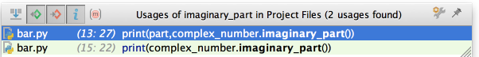

You can bring forward the list of all usages of a class, method or variable across the whole project, and quickly jump to the selected usage. To do that, place the caret at the symbol's name or at its usage in code and press &shortcut:ShowUsages; (Edit | Find | Show Usages in the main menu), scroll the list and click the desired usage.
